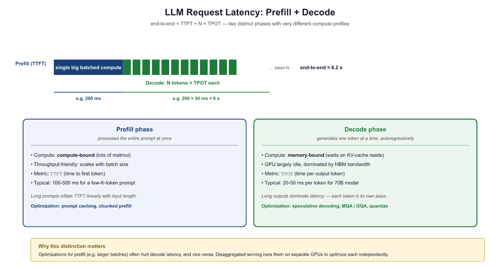

Serving an LLM in production is 10% machine learning and 90% convincing the infrastructure that thousands of users can share one very expensive GPU without anyone noticing the wait.
Quant, Queue Wrangling AI Agent
From model weights to production endpoint. A trained model is just a collection of tensors on disk. Turning it into a responsive, scalable API requires specialized serving infrastructure that handles continuous batching, KV cache management, request scheduling, model parallelism, and hardware-specific kernel optimization. For production deployment patterns and safety considerations, see Chapter 47. Building on the quantization (Section 9.1), KV cache (Section 9.3), and speculative decoding (Section 9.4) techniques covered earlier in this chapter, this section surveys the major serving frameworks available today, explains their architectural differences, and provides practical guidance for choosing the right tool for your deployment scenario. We conclude with a benchmarking methodology so you can make data-driven decisions for your own workloads.
Prerequisites
This section continues from Section 9.5. Familiarity with the Transformer architecture and with KV cache mechanics from Section 9.3 is assumed. The deployment patterns here build on the quantization discussion from Section 9.1.
This continuation of Section 9.5 picks up after vLLM and surveys the rest of the serving landscape: the SGLang and TGI alternatives, NVIDIA's TensorRT-LLM for top-end throughput, LMDeploy, the local-inference runtimes (Ollama and llama.cpp), edge and in-browser options, Triton for multi-model serving, a head-to-head comparison, the benchmarking methodology that lets you choose between them, and the disaggregated-inference pattern that separates the prefill and decode phases for higher utilization.
For a hands-on tutorial deploying models with vLLM, TGI, and SGLang, see Appendix K: Inference Serving.
9.6.1 SGLang
SGLang's RadixAttention was inspired by the radix tree, a 1968 data structure invented to compress IP routing tables. The connection to LLM prefix sharing was reportedly made by Lianmin Zheng during a long airport layover; he sketched the structure on a boarding pass and the paper followed within 6 weeks. SGLang's reference Linux kernel-style C++ scheduler is one of the few LLM serving stacks where the docs include the words "jiffies" and "runqueue".
SGLang (Zheng et al., 2024) is a serving framework built around the concept of RadixAttention, a tree-based data structure for efficient prefix sharing. While vLLM supports prefix caching, SGLang makes it a first-class design principle. The RadixAttention tree stores all cached KV blocks in a radix tree indexed by token sequences, enabling automatic longest-prefix matching across all active and recently-completed requests.
SGLang also introduces a programming model for structured generation. Its frontend DSL allows users to define complex generation patterns (multi-turn conversations, branching logic, constrained decoding) as Python programs, and the runtime optimizes execution across these patterns. This is particularly effective for workloads that share long system prompts or few-shot examples across many requests.
Key advantages over vLLM:
- RadixAttention: Automatic, fine-grained prefix sharing with LRU eviction. No manual prefix configuration needed.
- Structured generation: Native support for constrained output (JSON schema, regex) with minimal overhead.
- Multi-modal support: Built-in handling of vision-language models.
- Faster scheduling: Lightweight C++ scheduler with lower per-request overhead.
This is a preview, not a final verdict: a deeper comparison waits until after we cover TGI, quantization, and benchmarking later in this section. For most deployments, both vLLM and SGLang deliver comparable throughput. SGLang tends to outperform when workloads involve heavy prefix sharing (many requests with the same long system prompt) or structured output constraints. vLLM has broader ecosystem support, more quantization options, and a larger community. In production, it is worth benchmarking both on your specific workload before committing to one.
9.6.2 TGI (Text Generation Inference)
Hugging Face Text Generation Inference (TGI) is a production-ready serving solution tightly integrated with the Hugging Face ecosystem. It is the engine behind the Hugging Face Inference API and Inference Endpoints. TGI implements continuous batching, FlashAttention, tensor parallelism, and quantization (GPTQ, AWQ, BitsAndBytes, EETQ, FP8).
Distinguishing features:
- Hugging Face integration: Load any model from the Hub with zero configuration. Tokenizer handling, chat template application, and prompt formatting are automatic.
- Guidance/Outlines support: Built-in constrained decoding for JSON schemas and regex patterns.
- Docker-first deployment: Official Docker images with GPU support, simplifying production deployment.
- Watermarking: Built-in support for text watermarking (A Watermark for Large Language Models, Kirchenbauer et al., 2023).
# Example 2: Deploy TGI with Docker and query it
# Terminal: Launch TGI container
# $ docker run --gpus all --shm-size 1g -p 8080:80 \
# -v $PWD/data:/data \
# ghcr.io/huggingface/text-generation-inference:latest \
# --model-id meta-llama/Llama-3.1-8B-Instruct \
# --max-input-tokens 4096 \
# --max-total-tokens 8192 \
# --max-batch-prefill-tokens 8192 \
# --quantize awq
# Python: Query TGI with the text-generation client
from huggingface_hub import InferenceClient
import time
client = InferenceClient("http://localhost:8080")
# Single request with streaming
prompt = "Explain how PagedAttention works in three sentences."
# Non-streaming: measure time-to-first-token and total latency
t0 = time.perf_counter()
response = client.text_generation(
prompt,
max_new_tokens=150,
temperature=0.7,
details=True,
)
elapsed = time.perf_counter() - t0
print(f"Generated text: {response.generated_text[:120]}...")
print(f"Tokens generated: {len(response.details.tokens)}")
print(f"Total latency: {elapsed:.2f}s")
print(f"Tokens/sec: {len(response.details.tokens)/elapsed:.1f}")
# Streaming: measure time-to-first-token
t0 = time.perf_counter()
first_token_time = None
token_count = 0
for token in client.text_generation(
prompt, max_new_tokens=100, temperature=0.7, stream=True
):
if first_token_time is None:
first_token_time = time.perf_counter() - t0
token_count += 1
total_time = time.perf_counter() - t0
print(f"\nStreaming metrics:")
print(f"Time to first token (TTFT): {first_token_time*1000:.0f}ms")
print(f"Total tokens: {token_count}")
print(f"Tokens per second (TPS): {token_count/total_time:.1f}")9.6.3 TensorRT-LLM
TensorRT-LLM is NVIDIA's inference optimization library, purpose-built for NVIDIA GPUs. Unlike the Python-first frameworks above, TensorRT-LLM compiles model graphs into highly optimized CUDA kernels using NVIDIA's TensorRT compiler. This compilation step produces hardware-specific code that exploits features like FP8 Transformer Engines on Hopper GPUs, custom GEMM kernels tuned for specific matrix shapes, and kernel fusion patterns that eliminate memory round-trips.
Performance characteristics:
- 30% to 50% higher throughput than vLLM at high concurrency on H100 GPUs, due to hardware-specific kernel optimization.
- FP8 support with minimal accuracy loss, leveraging Hopper's native FP8 Tensor Cores.
- In-flight batching: NVIDIA's term for continuous batching with iteration-level scheduling.
- Multi-GPU: Tensor and pipeline parallelism across multiple GPUs and nodes.
The tradeoff is complexity. TensorRT-LLM requires a model compilation step that can take 10 to 30 minutes, model support must be explicitly added (not all Hugging Face models are supported out of the box), and debugging is more difficult than with Python-based frameworks. It is best suited for production deployments on NVIDIA hardware where maximum throughput justifies the setup cost.
# TensorRT-LLM: Build and run (requires NVIDIA GPU + tensorrt_llm installed)
# Step 1: Convert model to TensorRT-LLM format
# python convert_checkpoint.py --model_dir meta-llama/Llama-3.1-8B \
# --output_dir ./trt_ckpt --dtype float16
# Step 2: Build the engine (compilation step, ~15 min)
# trtllm-build --checkpoint_dir ./trt_ckpt \
# --output_dir ./trt_engine \
# --gemm_plugin float16 \
# --max_batch_size 32 \
# --max_input_len 4096 \
# --max_seq_len 8192
# Step 3: Run inference with the compiled engine
import tensorrt_llm
from tensorrt_llm.runtime import ModelRunner
runner = ModelRunner.from_dir("./trt_engine")
outputs = runner.generate(
["Explain the advantage of compiled inference engines:"],
max_new_tokens=100,
temperature=0.7
)
print(outputs[0])9.6.4 LMDeploy
LMDeploy (developed by the InternLM team at Shanghai AI Lab) is a serving framework with a strong focus on quantization and a custom inference backend called TurboMind. TurboMind implements its own attention kernels and KV cache management, with particularly strong support for W4A16 quantization (4-bit weights, 16-bit activations). LMDeploy achieves competitive throughput with vLLM and TGI while offering a simpler deployment experience for quantized models.
Notable features:
- TurboMind backend: Custom C++ inference engine with optimized attention and GEMM kernels.
- Strong quantization: W4A16 (AWQ), W8A8, and KV cache INT8/INT4 quantization.
- VLM support: First-class support for vision-language models (InternVL, LLaVA).
- Pipeline parallelism: Efficient multi-GPU serving with pipeline stages.
9.6.5 Ollama and llama.cpp: Local Inference
Not every deployment requires a GPU cluster. For local development, prototyping, and privacy-sensitive applications, Ollama and llama.cpp provide efficient inference on consumer hardware, including CPU-only machines and Apple Silicon Macs.
9.6.5.1 llama.cpp
llama.cpp (Gerganov, 2023) is a C/C++ implementation of LLM inference with minimal dependencies. It supports a wide range of hardware through multiple backends: CUDA (NVIDIA GPUs), Metal (Apple Silicon), Vulkan (cross-platform GPU), and optimized CPU paths (AVX2, ARM NEON). Its GGUF quantization format supports 2-bit through 8-bit quantization with per-block scaling, enabling 7B models to run at interactive speeds on a laptop CPU.
9.6.5.2 Ollama
Ollama wraps llama.cpp in a user-friendly interface with a model registry, automatic model downloading, and a simple REST API. It manages model lifecycle (downloading, loading, unloading) and exposes an API compatible with the OpenAI format. Ollama is the easiest path from zero to running an LLM locally.
# Example 3: Local inference with Ollama
# Terminal: Pull and run a model
# $ ollama pull llama3.1:8b-instruct-q4_K_M
# $ ollama serve # starts the API server on port 11434
# Python: Query Ollama's OpenAI-compatible API
import requests
import time
def ollama_generate(prompt, model="llama3.1:8b-instruct-q4_K_M", max_tokens=128):
"""Query Ollama's local API."""
url = "http://localhost:11434/v1/chat/completions"
payload = {
"model": model,
"messages": [{"role": "user", "content": prompt}],
"max_tokens": max_tokens,
"temperature": 0.7,
"stream": False,
}
t0 = time.perf_counter()
resp = requests.post(url, json=payload)
elapsed = time.perf_counter() - t0
data = resp.json()
return data, elapsed
# Benchmark on different quantizations
prompts = [
"Write a haiku about machine learning.",
"Explain the difference between TCP and UDP in two sentences.",
"What is the capital of Australia and why was it chosen?",
]
models = [
"llama3.1:8b-instruct-q4_K_M", # 4-bit, ~4.9 GB
"llama3.1:8b-instruct-q8_0", # 8-bit, ~8.5 GB
]
print(f"{'Model':<38} {'Tokens':>7} {'Time':>7} {'Tok/s':>7}")
print("-" * 62)
for model in models:
total_tokens, total_time = 0, 0
for prompt in prompts:
data, elapsed = ollama_generate(prompt, model=model)
n_tok = data["usage"]["completion_tokens"]
total_tokens += n_tok
total_time += elapsed
avg_tps = total_tokens / total_time
print(f"{model:<38} {total_tokens:>7} {total_time:>6.1f}s {avg_tps:>6.1f}")Running a Q4 model locally on a MacBook Pro M3 achieves roughly 30 to 40 tokens per second for an 8B model. A cloud vLLM deployment on an A100 achieves 600+ tokens per second for the same model at high concurrency. The 15x to 20x gap reflects the fundamental hardware difference, but for single-user applications (coding assistants, private document analysis, prototyping), local inference offers zero latency overhead, complete privacy, and no API costs.
9.6.6 Edge, On-Device, and In-Browser Inference
Cloud inference dominates production workloads, but a growing ecosystem of runtimes enables LLM inference directly on end-user devices: laptops, phones, tablets, and even web browsers. The motivation is threefold: latency (no network round-trip), privacy (data never leaves the device), and cost (no per-token API fees). The tradeoff is limited model size, typically 1B to 8B parameters with aggressive quantization.
9.6.6.1 Key Runtimes
llama.cpp (covered in Section 8.1) remains the foundation for most on-device inference. Its GGUF format packages quantized weights with metadata for CPU, CUDA, Metal, and Vulkan backends. Models quantized to Q4_K_M typically retain 95%+ of their original quality while fitting comfortably in 4 to 8 GB of RAM.
WebGPU and WebAssembly bring LLM inference into the browser. WebLLM (MLC team) compiles models via Apache TVM into WebGPU shaders, achieving 30+ tokens per second for 3B models on a laptop GPU with zero installation. Transformers.js (Hugging Face) uses ONNX Runtime compiled to WebAssembly, enabling smaller models (up to ~1B parameters) to run in any modern browser. Both approaches eliminate server costs entirely for lightweight tasks like classification, summarization, and local chat.
ONNX Runtime provides cross-platform model serving across Windows, Linux, macOS, Android, and iOS. Models exported to ONNX format can use hardware-specific execution providers (CUDA, DirectML, CoreML, XNNPACK) without code changes. For teams deploying the same model across multiple platforms, ONNX Runtime avoids maintaining separate inference stacks per target.
Apple MLX is a NumPy-style framework optimized for Apple Silicon's unified memory architecture. Because the CPU and GPU share a single memory pool on M-series chips, MLX avoids the copy overhead that penalizes GPU inference on traditional hardware. MLX supports 4-bit quantized models up to 70B parameters on high-memory configurations (M2/M3/M4 Ultra with 192 GB unified memory), making Apple hardware surprisingly capable for local inference of large models.
9.6.6.2 Runtime Comparison
| Runtime | Platforms | Practical Model Limit | Typical Latency (8B Q4) | Best For |
|---|---|---|---|---|
| llama.cpp | Windows, Linux, macOS, Android | 70B (high-RAM) | 25 to 40 tok/s (M3 Pro) | Local dev, privacy-sensitive apps |
| WebLLM | Any browser with WebGPU | 8B | 15 to 35 tok/s (laptop GPU) | Zero-install browser apps |
| Transformers.js | Any browser (WASM) | 1B | 5 to 15 tok/s (CPU) | Classification, embeddings |
| ONNX Runtime | Windows, Linux, macOS, mobile | 13B | 20 to 50 tok/s (varies) | Cross-platform deployment |
| Apple MLX | macOS, iOS (Apple Silicon) | 70B (192 GB Mac) | 30 to 55 tok/s (M3 Max) | Apple ecosystem, research |
Edge inference is compelling when one or more of these conditions hold: (1) data cannot leave the device for regulatory or privacy reasons, (2) the application serves a single user and does not need high concurrency, (3) network connectivity is unreliable or latency-sensitive, or (4) per-token API costs are prohibitive at scale. If your workload requires models larger than 8B, high concurrency, or the lowest possible latency, cloud serving with vLLM or TensorRT-LLM remains the better choice. The decision is not binary: many production systems use edge inference for simple queries and fall back to cloud for complex ones.
9.6.7 Triton Inference Server
NVIDIA Triton Inference Server is a production-grade model serving platform designed for multi-model, multi-framework deployments. Unlike the LLM-specific frameworks above, Triton is a general-purpose inference server that can host any model format (TensorRT, ONNX, Section 0.3, TensorFlow) behind a unified gRPC/HTTP API. For LLM workloads, Triton integrates with TensorRT-LLM as a backend, combining Triton's production features (model versioning, A/B testing, ensemble pipelines, health checks, metrics) with TensorRT-LLM's optimized inference.
Triton is the right choice when you need enterprise-grade operational features: dynamic model loading/unloading, GPU sharing across multiple models, Prometheus metrics export, Kubernetes-native health probes, and support for pre/post-processing pipelines. For simpler LLM-only deployments, vLLM or SGLang's built-in API servers are sufficient.
9.6.7.1 Multi-LoRA Serving
Many production deployments need to serve multiple fine-tuned model variants simultaneously: one LoRA adapter for customer support tone, another for legal document generation, a third for code completion. The naive approach of loading each adapter as a separate model instance wastes GPU memory, because the base model weights (which are identical across all variants) are duplicated for every adapter. Multi-LoRA serving solves this by loading the base model once and dynamically swapping LoRA adapters on a per-request basis.
Both vLLM and SGLang support multi-LoRA natively. The base model is loaded into GPU memory once, and each LoRA adapter (typically 10 to 100 MB per adapter) is loaded separately. When a request arrives, it specifies which adapter to use, and the serving framework applies the appropriate low-rank weight updates during the forward pass. Because LoRA adapters modify only a small fraction of the model's parameters, the per-request overhead is minimal: typically less than 1% additional latency compared to serving the base model alone.
The memory savings are substantial. Serving 20 LoRA variants of a 70B model as separate instances would require 20x the base model memory. With multi-LoRA serving, you need only 1x base model memory plus a small overhead for each adapter. This makes it practical to serve dozens or even hundreds of specialized model variants on a single GPU cluster.
# vLLM multi-LoRA serving
from vllm import LLM, SamplingParams
from vllm.lora.request import LoRARequest
llm = LLM(
model="meta-llama/Llama-3.1-8B-Instruct",
enable_lora=True,
max_loras=4, # Max concurrent LoRA adapters in memory
max_lora_rank=64, # Maximum rank across all adapters
)
# Define LoRA adapters
support_lora = LoRARequest("support", 1, "adapters/customer-support")
legal_lora = LoRARequest("legal", 2, "adapters/legal-drafting")
# Route requests to different adapters
params = SamplingParams(max_tokens=256, temperature=0.7)
support_out = llm.generate(
["How can I help you today?"],
params,
lora_request=support_lora,
)
legal_out = llm.generate(
["Draft a non-disclosure agreement for:"],
params,
lora_request=legal_lora,
)Multi-LoRA serving works best when all adapters share the same base model and were trained with the same LoRA configuration (target chapters and rank). Mixing adapters with different ranks is supported but may require padding, which slightly increases memory usage. For maximum efficiency, standardize your LoRA training configuration across all variants.
9.6.8 Framework Comparison
| Framework | Best For | KV cache | Quantization | Ease of Use |
|---|---|---|---|---|
| vLLM | General-purpose GPU serving | PagedAttention | GPTQ, AWQ, FP8, GGUF | High |
| SGLang | Prefix-heavy, structured output | RadixAttention | GPTQ, AWQ, FP8 | High |
| TGI | HF ecosystem, quick deployment | FlashAttention | GPTQ, AWQ, BnB, EETQ, FP8 | Very High |
| TensorRT-LLM | Max throughput on NVIDIA HW | Custom paged | FP8, INT8, INT4 (native) | Low |
| LMDeploy | Quantized models, VLMs | TurboMind | W4A16, W8A8, KV INT4/8 | Medium |
| Ollama | Local dev, privacy, prototyping | llama.cpp | GGUF (Q2 through Q8) | Very High |
| llama.cpp | Minimal footprint, edge/CPU | Custom | GGUF (Q2 through Q8) | Medium |
| Triton Server | Enterprise, multi-model | Via TRT-LLM backend | All TRT-LLM formats | Low |
9.6.9 Benchmarking Methodology
Choosing a serving framework requires benchmarking on your specific workload. The key metrics for LLM serving are:
Latency Metrics:
- Time to First Token (TTFT): The delay from request submission to the first token being returned. This is dominated by the prefill phase (processing the input prompt). TTFT matters most for interactive applications.
- Time Per Output Token (TPOT): The average time between consecutive output tokens during the decode phase. Also called inter-token latency. This determines the perceived "typing speed" for streaming applications.
- End-to-end latency: Total time from request to completion. Equals TTFT + (output_length × TPOT).
Throughput Metrics:
- Tokens per second (tok/s): Total output tokens generated across all concurrent requests per unit time. This is the primary capacity metric.
- Requests per second (RPS): Number of completed requests per second. Varies with output length, so tok/s is generally more informative.

Always benchmark under realistic conditions. Common mistakes include: (1) testing with uniform prompt/output lengths when your real traffic is variable, (2) warming up the server before measuring (caches and JIT compilation change behavior), (3) ignoring the latency-throughput tradeoff (a system that maximizes tok/s at 16 concurrent requests may have unacceptable TTFT at 128 concurrent requests), and (4) comparing frameworks at different quantization levels. Use tools like vllm benchmark, genai-perf, or custom load generators that replay realistic traffic patterns.
# Comprehensive serving benchmark: measure TTFT, throughput, and TBT under load.
# Drives a running vLLM (or any OpenAI-compatible) server with concurrent requests.
import asyncio
import time
import statistics
from openai import AsyncOpenAI
client = AsyncOpenAI(base_url="http://localhost:8000/v1", api_key="not-used")
async def run_request(prompt: str) -> dict:
t0 = time.perf_counter()
first_token_t = None
tokens = 0
stream = await client.chat.completions.create(
model="meta-llama/Llama-3.1-8B-Instruct",
messages=[{"role": "user", "content": prompt}],
stream=True,
max_tokens=128,
)
async for chunk in stream:
if chunk.choices[0].delta.content:
if first_token_t is None:
first_token_t = time.perf_counter()
tokens += 1
t1 = time.perf_counter()
return {
"ttft_ms": (first_token_t - t0) * 1000 if first_token_t else None,
"total_ms": (t1 - t0) * 1000,
"tokens": tokens,
"tbt_ms": (t1 - first_token_t) / max(1, tokens - 1) * 1000 if first_token_t else None,
}
async def benchmark(prompts: list[str], concurrency: int = 8):
sem = asyncio.Semaphore(concurrency)
async def bounded(p):
async with sem: return await run_request(p)
return await asyncio.gather(*[bounded(p) for p in prompts])
prompts = ["Explain quantization in one paragraph."] * 64
results = asyncio.run(benchmark(prompts, concurrency=8))
ttft = [r["ttft_ms"] for r in results if r["ttft_ms"]]
tbt = [r["tbt_ms"] for r in results if r["tbt_ms"]]
print(f"TTFT p50/p95: {statistics.median(ttft):.0f}/{statistics.quantiles(ttft, n=20)[-1]:.0f} ms")
print(f"TBT p50/p95: {statistics.median(tbt):.1f}/{statistics.quantiles(tbt, n=20)[-1]:.1f} ms")Notice how throughput increases from 48 tok/s at concurrency 1 to 894 tok/s at concurrency 32 (an 18x improvement), while TTFT degrades from 87ms to 687ms (an 8x increase). This is the fundamental latency-throughput tradeoff in LLM serving. Higher concurrency fills the GPU more efficiently, improving throughput, but each individual request waits longer as it shares GPU cycles with more peers. Production systems must be tuned to maintain acceptable TTFT under expected load.
9.6.10 Disaggregated Inference: Separating Prefill and Decode
All serving frameworks discussed above run the prefill phase (processing the input prompt) and the decode phase (generating output tokens one by one) on the same GPU. This co-located design creates a fundamental tension: prefill is compute-bound (dominated by matrix multiplications over the full input sequence), while decode is memory-bandwidth-bound (limited by reading model weights and KV cache for each token). Mixing these two phases on the same hardware means neither phase achieves optimal utilization. Disaggregated inference addresses this by physically separating prefill and decode onto different hardware pools, each optimized for its phase's characteristics.
Figure 9.6.2b contrasts the co-located design with disaggregation: instead of forcing one GPU to alternate between a compute-hungry prefill and a bandwidth-hungry decode, the two phases run on separate, right-sized pools and hand off only the KV cache across a fast network.
![Co-located versus disaggregated LLM inference. In the co-located design, a single GPU pool runs both prefill, which is compute-bound, and decode, which is memory-bandwidth-bound; the two phases interfere, so neither reaches good utilization. In the disaggregated design, prefill runs on a compute-optimized prompt-machine pool and decode runs on a bandwidth-optimized token-machine pool. After prefill, only the KV cache is transferred between pools over a high-bandwidth network such as RDMA or InfiniBand. Each pool can be sized and scaled independently for its workload.](../../images/svg-rasterized/png/svg_f4a8277a72db215f.png)
The Prefill/Decode Mismatch
To understand why disaggregation helps, consider the resource profile of each phase. During prefill, the GPU processes all input tokens in parallel through matrix multiplications that achieve high arithmetic intensity (many FLOPs per byte of memory access). An H100 GPU running prefill for a 7B model can process roughly 20,000 to 40,000 tokens per second, keeping its Tensor Cores well utilized. During decode, the GPU generates one token at a time, reading the full model weights and the growing KV cache for each token. The arithmetic intensity drops dramatically because the "batch size" for the computation is effectively 1 (one token), making decode severely memory-bandwidth-limited. An H100 generating tokens for a single request achieves only about 30 to 60 tokens per second, utilizing a fraction of its compute capability.
When prefill and decode share a GPU (as in standard continuous batching), decode requests must wait while the GPU processes prefill batches, inflating TTFT for queued requests. Conversely, decode's low arithmetic intensity wastes the compute resources that prefill could use productively. The Sarathi-Serve paper (Agrawal et al., 2024) quantified this interference: in co-located serving under high load, prefill operations can inflate decode latency by 2 to 5x, and decode operations reduce prefill throughput by 30 to 50% compared to dedicated execution.
Splitwise and DistServe: Architectural Approaches
Splitwise (Patel et al., 2024) from Microsoft Research introduced the idea of running prefill on "prompt machines" and decode on "token machines" connected by a high-bandwidth network. Prompt machines are optimized for compute (maximum Tensor Core utilization, larger batch sizes), while token machines are optimized for memory bandwidth (potentially using GPUs with higher memory bandwidth or different quantization levels). After prefill completes, the KV cache is transferred from the prompt machine to the token machine over the network. Splitwise demonstrated 20 to 30% improvement in cost efficiency at the same latency targets compared to co-located serving, because each machine type is utilized closer to its theoretical maximum.
DistServe (Zhong et al., 2024) takes a similar approach but adds a placement optimization algorithm that determines how many GPUs to allocate to prefill versus decode based on the current request distribution. When the workload is prompt-heavy (long inputs, short outputs), DistServe allocates more GPUs to prefill. When the workload shifts to generation-heavy tasks (short inputs, long outputs), GPUs are reallocated to decode pools. This dynamic balancing achieves 2 to 4x better goodput (successful requests per second meeting latency SLOs) compared to co-located serving under variable workloads.
Mooncake: Production-Scale Disaggregation
Mooncake, developed by Moonshot AI for their Kimi chatbot service (one of China's most popular AI assistants), represents the most mature production deployment of disaggregated inference. Mooncake's architecture separates the serving cluster into prefill nodes and decode nodes connected by RDMA (Remote Direct Memory Access) networking. After prefill completes, the KV cache is transferred to decode nodes at line rate (up to 400 Gb/s over InfiniBand), with the transfer latency typically adding only 10 to 50ms to the total request time. Mooncake introduced a "KV cache pool" that stores KV caches in a distributed, prefix-aware cache shared across decode nodes. This means that if two users submit prompts sharing a common system prompt, the prefill for the shared prefix happens once, and both decode nodes reference the same cached KV entries.
Mooncake's production results (reported for serving Kimi's 200K-context-window model) showed a 75% reduction in per-request cost compared to co-located serving at the same P99 latency, primarily because the decode fleet could be right-sized for the memory-bandwidth-bound workload without paying for idle compute capability. The system handles the KV cache transfer challenge through pipelining: the KV cache for layer $i$ is transferred while layer $i+1$ is being computed, hiding most of the network latency.
When Disaggregation Makes Sense
Disaggregated inference adds operational complexity (separate fleet management, network-dependent KV cache transfer, dynamic load balancing) that is justified only at significant scale. The break-even point is roughly 50 to 100 GPUs of serving capacity, below which the overhead of maintaining separate pools and the network infrastructure outweighs the efficiency gains. For smaller deployments, techniques like chunked prefill (splitting long prefills into smaller chunks interleaved with decode steps) and priority-based scheduling achieve most of the benefits with far less operational complexity. As cloud providers begin offering disaggregated inference as a managed service (early signs include specialized prefill/decode instance types on major clouds), the operational barrier will decrease, potentially making disaggregation accessible to smaller deployments by late 2025.
Static batching wastes GPU cycles waiting for the longest sequence to finish. Use continuous or dynamic batching (supported by vLLM, TGI, and TensorRT-LLM) to fill empty slots as requests complete. This alone can double your throughput.
Disaggregated inference and specialized hardware. The emerging paradigm of disaggregated inference separates prefill (compute-bound) and decode (memory-bound) phases onto different hardware optimized for each workload. Splitwise (2024) and DistServe demonstrate significant throughput improvements by running prefill on compute-dense GPUs and decode on memory-optimized instances. Meanwhile, purpose-built inference accelerators (Groq's LPU, Cerebras, custom ASICs) challenge the GPU monopoly by offering dramatically different latency and throughput profiles. The integration of model serving with edge deployment, where small quantized models run on phones and laptops while larger models serve from the cloud, is creating a heterogeneous serving landscape that requires new routing and orchestration strategies.
- The LLM serving stack comprises request scheduling, continuous batching, KV cache management, model parallelism, kernel optimization, and an API layer. Each framework makes different tradeoffs across these layers.
- vLLM is the most widely adopted framework, built on PagedAttention, with broad model and quantization support. It is the default choice for most GPU-based deployments.
- SGLang excels at prefix-heavy workloads through RadixAttention and offers native structured generation support.
- TGI integrates tightly with the Hugging Face ecosystem and offers the simplest Docker-based deployment path.
- TensorRT-LLM delivers the highest throughput on NVIDIA hardware (30% to 50% over vLLM) at the cost of compilation complexity and reduced flexibility.
- Ollama and llama.cpp enable local inference on consumer hardware (CPU, Apple Silicon, consumer GPUs) with GGUF quantization, ideal for development and privacy-sensitive applications.
- Benchmark on your workload using realistic traffic patterns. Measure TTFT, TPOT, and throughput at multiple concurrency levels to understand the latency-throughput tradeoff for your specific deployment.
Show Answer
Show Answer
Show Answer
Show Answer
Exercises
Explain the speculative decoding algorithm step by step. Why can a small draft model speed up a large model's generation without changing the output distribution?
Answer Sketch
Steps: (1) The small draft model generates k candidate tokens autoregressively (fast, because it is small). (2) The large model processes all k candidates in a single forward pass (parallel verification). (3) For each position, compare draft and target probabilities: accept the draft token with probability min(1, p_target/p_draft). (4) At the first rejection, sample from an adjusted distribution and discard all subsequent draft tokens. (5) Repeat. This preserves the target distribution because the acceptance criterion exactly corrects for the draft model's biases. Speedup comes from the large model processing k tokens at once (limited by memory bandwidth, not compute) versus k sequential forward passes.
For speculative decoding, you need a draft model that is much smaller but produces similar outputs to the target model. What properties make a good draft model, and why is a fine-tuned version of the target model often the best choice?
Answer Sketch
Good draft model properties: (1) High agreement rate with the target (tokens accepted >70% of the time). (2) Fast inference (at least 5x faster than the target). (3) Same tokenizer as the target (required for alignment). A fine-tuned smaller version of the target (e.g., a 1B distilled version of a 70B model) works best because it naturally produces similar distributions, having learned from the same pretraining data or from the target's outputs. Using an unrelated small model typically gives low acceptance rates (40 to 50%), reducing the speedup to near zero.
If a draft model generates tokens 10x faster than the target model, and the acceptance rate is 80% with k=5 draft tokens, estimate the expected speedup. How does speedup change as acceptance rate drops to 50%?
Answer Sketch
With 80% acceptance and k=5: on average, ~4 tokens are accepted per speculation step, plus 1 from the rejection resampling = ~5 tokens per step. Each step costs 1 target forward pass + k draft passes = 1 + 5/10 = 1.5 'target-equivalent' passes. Speedup: 5/1.5 = ~3.3x. With 50% acceptance: on average ~2.5 tokens accepted + 1 = ~3.5 tokens per step. Cost: 1 + 5/10 = 1.5. Speedup: 3.5/1.5 = ~2.3x. At very low acceptance rates (~20%), the draft overhead eats into savings, and speedup approaches 1x. The acceptance rate is the most critical factor determining whether speculative decoding is worthwhile.
Implement a simplified speculative decoding loop in Python pseudocode (or with a real model if resources allow). The loop should: generate k draft tokens, verify against target model probabilities, accept/reject, and resample at the rejection point.
Answer Sketch
Key implementation details: (1) Draft model generates k tokens. (2) Target model processes the full sequence in one pass, getting logits at all k positions. (3) For position i: compute r = uniform(0,1); accept if r < p_target[i]/p_draft[i], else reject and sample from max(0, p_target - p_draft) (normalized). (4) All tokens after the first rejection are discarded. (5) Append accepted tokens and the resampled token to the sequence. The tricky part is the rejection sampling step, which must correctly compute the adjusted distribution to maintain the target model's output distribution.
Medusa adds multiple decoding heads to a single model, allowing it to predict several future tokens simultaneously. Compare this approach with speculative decoding using a separate draft model. What are the tradeoffs?
Answer Sketch
Medusa advantages: (1) No separate draft model needed (simpler deployment). (2) The draft 'heads' share the same representations as the main model, potentially giving higher acceptance rates. (3) Lower memory overhead (just extra linear layers vs. a whole second model). Speculative decoding advantages: (1) The draft model can be independently optimized. (2) Larger capacity gap means higher potential speedup. (3) No modification to the target model architecture. Tradeoffs: Medusa requires training the extra heads (small but nonzero cost), and the heads are limited in how far ahead they can reliably predict (typically 2 to 3 tokens). Speculative decoding with a high-quality draft model can speculate 5+ tokens ahead with good acceptance rates. In practice, both achieve 2 to 3x speedups.
What's Next?
In the next section, Section 9.7: Model Pruning & Sparsity, we continue building on the topics covered here.